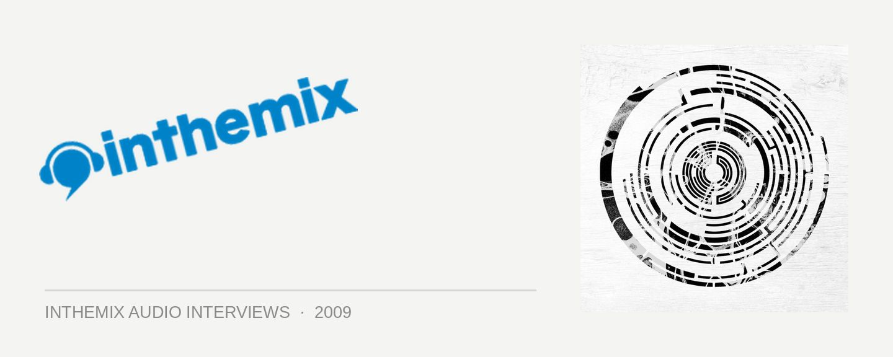

Pendulum [Audio]: The prodigal sons return
Every time Perth titans Pendulum return to their homecountry of Australia, it’s kind of a big deal. It’s been nearly a year since they performed mainstage at the Big Day Out, but this tour over New Year period we’ll be getting something a little special planned. Using a DJing setup they describe as a lot more “involved”, founding members Gareth McGrillen, Rob Swire and Paul Harding will be hitting the stage using enhanced Ableton controllers; and more importantly, they’ll be debuting the sounds of their upcoming third album.
“We’ve been working on it intensively for the past 3 or 4 months, but technically ever since we finished In Silico in March of last year. A lot of it we’ve done on the road whilst touring, in small studios set up on the bus and in hotel rooms and stuff, but it’s coming along nicely. I guess we’re a tiny bit behind schedule, but that’s to be expected with us – we’re perfectionists,” Gareth told ITM.
Excitingly, we can expect a significant return to the ‘electronic’ with the new album. “We’ve definitely been going back to Hold Your Colour a lot; listening back to it and comparing where it went as opposed to In Silico. We’re definitely cross-referencing our earlier stuff on this one, but obviously it’s going to sound like a progression of where we were when we left In Silico.”
Wit the boys in the country right now, and with all the New Year madness drawing even closer, ITM’s Angus Paterson talks to Pendulum about what they’ve got in store, both on their Australian tour as well as over the next 12 months.
Pendulum tour dates:
Sat Dec 26th – Metro City, Perth
Wed Dec 30th – Phat, Nelson (NZ)
Thur Dec 31st – Harbour Party NYE Luna Park, Sydney
Fri Jan 1st – Summadayze, Adelaide